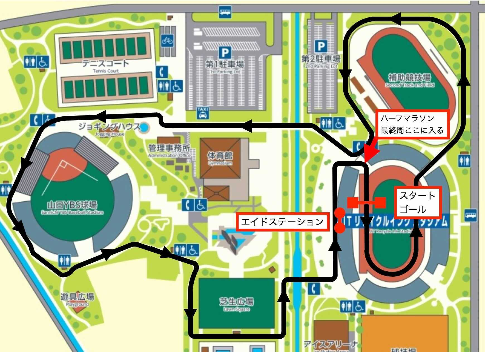

大会情報
| 大会名称 | 山梨スペシャリティハーフマラソン+5キロ10キロマラソン |
|---|---|
| 開催日程 | 2021年12月12日(日)12時30分より受付開始 |
| 開催場所 | 山梨県甲府市 小瀬スポーツ公園 JITリサイクルインクスタジアム陸上競技場 |
| 競技距離 | 5キロ・10キロ・ハーフマラソン |
| 制限時間 | 16時を最終周とする |
| 参加人数 | 400人 |
| エントリー開始 | 9月 |
| 主催 | フジスポーツジャパン実行委員会 |
5キロを諦めずに走りたい人からハーフマラソンを完走したい人。ハーフマラソン、10キロ、5キロ各部門にエントリーください。
コース
小瀬スポーツ公園全体を使用するクローズドコースです。ほぼフラットで折り返しもなく走りやすく、木々に囲まれ自然も豊富、広大な敷地を活かした開放感は抜群です。是非コース紹介動画をご覧ください。

コンセプト
ハーフマラソン、10キロ、5キロのタイムトライアル型マラソンイベントです。目標タイムに近いグループ（10名から20名程度）毎にスタートします。1位、2位を決めるレースではなく、個人目標にチャレンジし冬の1日をお楽しみください。タイム計測を行い記録証を発行します。
会場
小瀬スポーツ公園 JITリサイクルインクスタジアム
- 第1種公認 全天候ウレタン舗走路400m 8コース
- 夜間照明（200～1500Lx）
- 大型映像装置：7.8m ｘ 17.6m（画面部分）
- VF甲府のホームスタジアム

プロサッカーリーグのヴァンフォーレ甲府のホームグランドであるJITリサイクルインクスタジアム陸上競技場で開催します。観客席は17000席以上あり、ソーシャルディスタンス対策も徹底します。富士山を背景とした全国でも数少ない陸上競技場です。
コロナとスポーツを両立するため、さまざまなコロナ対策を徹底します。参加者全員でコロナ感染ゼロを目指しましょう。
- スタート/ゴール以外のマスク着用の徹底
- エントランスでの検温/アルコール消毒
- イベント前14日間の体温記録確認
- ワクチン接種記録確認
など
競技概要・参加費
| 競技 | マラソン5キロ ¥4,000から¥5,000
マラソン10キロ ¥5,000から¥6,000 ハーフマラソン ¥6,500から¥7,500 |
|---|---|
| 参加資格 | 18歳以上 |
| 制限時間 | 16時を最終周回とする |
スケジュール
| 12:30 - 13:20 | ハーフマラソングループ受付 |
|---|---|
| 12:30 - 13:50 | 10キログループ受付 |
| 12:30 - 14:20 | 5キログループ受付 |
| 13:30 - | ハーフマラソン ローリングスタート |
| 14:00 - | 10キロ ローリングスタート |
| 14:30 - | 5キロ ローリングスタート |
| - 16:00 | 最終周回締め切り時間 |
| - 16:30 | 競技終了予定 |
アクセス方法
| 車でお越しの方 | 東京方面よりお越しの方
・中央自動車道甲府南インターチェンジで降りて、交差点を右折し、国道358号線を甲府駅方面へ。 「南甲府署南」の交差点を右折し、小瀬スポーツ公園通りを進む。（所要時間 約10分） 長野方面よりお越しの方 ・中央自動車道甲府昭和インターチェンジで降りて、国道20号線を甲府方面へ。 「小瀬スポーツ公園入口」の交差点を右折し、けやき通りを進む。（所要時間 約15分）
|
|---|---|
| 電車でお越しの方 | JR中央線甲府駅で降りて、南口よりタクシーで約20分。
JR中央線甲府駅からJR身延線へ乗り換え、南甲府駅よりタクシーで約10分。 |
| 山梨交通バスをご利用の方 | ・JR中央線甲府駅南口バスターミナル3番のりばより伊勢町経由（70系統）小瀬スポーツ公園行きに乗り、「小瀬スポーツ公園正門」または「小瀬スポーツ公園」で下車。（所要時間 約30分）
・中道橋経由（75系統）豊富行きに乗り、「山城小学校」で下車。徒歩で約10分。 小瀬スポーツ公園 |
参加特典
| 都内マラソンレッスン（有料） | ランニングアドバイザーによるハーフマラソン1時間40分〜1時間50分（フルマラソン・サブ4）を目標にしたトレーニングを（夜７時から8時30分を予定）行います。会場は都心を検討しており決まりしだい連絡します。
※10月より週1度、平日の夜を予定しております。 |
|---|---|
| 理学療法士によるボディメンテナンス（有料） | ケガの予防やパフォーマンス向上のために適切な動きができるよう理学療法士による動作改善を行います。イベント参加前、参加後に理学療法士に診てもらうことで運動療法や物理療法で万全な体調にします。
※マラソンスタート前、ゴール後を選ぶことができます。 |
| 管理栄養士によるフードアドバイス（有料） | 「疲労回復にはこれを食べましょう」「筋力アップに効果的な食べ物」といった栄養についてプロアスリートも導入してるフードアドバイスを行なっております。
肉離れしそうなんだけど何を食べればいい？』『足つっちゃうんだけど食事で対策してできないか？』など相談ベースでアドバイスすることもできます。もっと筋力を増やしたい選手、逆に身体をしぼりたい選手、ケガの不安を抱えている選手など、一人ひとり悩みや要望が違います。それにこたえるための最適な食事を考え、選手のパフォーマンスが最大限発揮できるようにしてます ※このフードアドバイスは個別（1対1）オンライン面談となります。11月より週1回、平日の夜、または、週末となります。参加選手の専属管理栄養士さんがイベント当日まで担当しますので、体調を相談していただくことで、タイムリーに食事の提案をいたします。> |
| プロカメラマンによるフリーフォト（無料） | みなさまのランニング姿をスポーツプロカメラマンが撮影します。さまざまな映えポイントで撮影しますので、お楽しみに。 |
注意事項
- 無観客開催となります。参加者、その同行者にはスタジアムシートを解放します。
- コロナ対策、園路占有等の諸事情により、申込は先着順とさせていただきます。
- 申込後の種目変更はできません。
- 手荷物は、所定の場所でお預かりいたしますが、盗難・紛失等の責任は負いません。
- 競技役員が競技続行不可能と判断した選手に対し、競技を中止させることがあります。